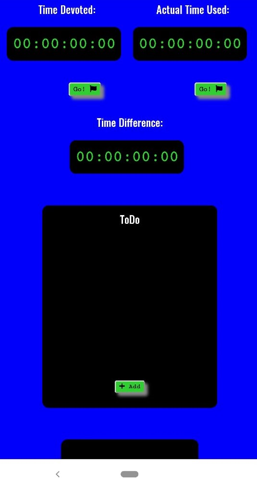

ABOUT KWOC:
Kharagpur Winter of Code (KWOC) is an annual online program where students new to open-source softwares contribute in some registered projects. It's a five week program which is open to students of any university/college. Students are guided by mentors. This program prepares students for other open source programs such as GSOC.

SELECTION OF PROJECTS:
There were projects involving different technologies such as website development, app development, AI, programming, tricks and hacks etc. I went through a lot of projects and selected a project named "Productivity Meter". It's a website which helps in measuring the probmlem solving productivity by keeping track of actual time invested in problem solving and number of problems solved.
My mentor for the project was Raghwendra Dey.
MY PROGRESS:
I went through the project, it's open issues, readme.md file. Our team discussed the features to be added in this project. Our mentor assigned us some issues to work upon. I worked on adding responsiveness and styling to the website.
My first pull request added resposiveness to the website and changed some fonts. But the overall layout of the website was changed and I was working on the original layout. So, the pull request was merged in a separate branch (not in master branch).

My next pull request just updated the readme file with new images of the website.
I made a lot of changes for responsiveness and different PRs for them. My last pull request added responsiveness to the latest modified website. Apart from this, I corrected some typos, added new fonts etc.